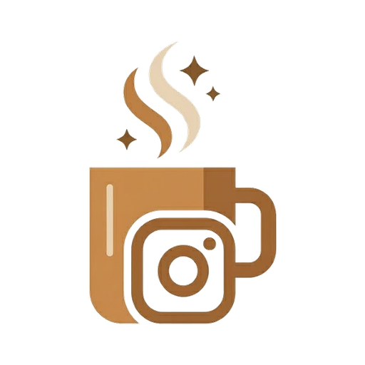

STEP 02/04
75%
우리 가게를 조금 더 알려주세요
어떤 손님이 오시는지, 어떤 분위기를 좋아하는지 자유롭게 적어주세요.

auto_awesome
브랜드 이야기 만들기
안 적어도 시작할 수 있어요
info
한두 문장만 적어도 충분해요. 매장 분위기, 자주 오는 손님, 대표 메뉴처럼 편하게 적어주시면 됩니다.

Brewgram어떤 손님이 오시는지, 어떤 분위기를 좋아하는지 자유롭게 적어주세요.
한두 문장만 적어도 충분해요. 매장 분위기, 자주 오는 손님, 대표 메뉴처럼 편하게 적어주시면 됩니다.